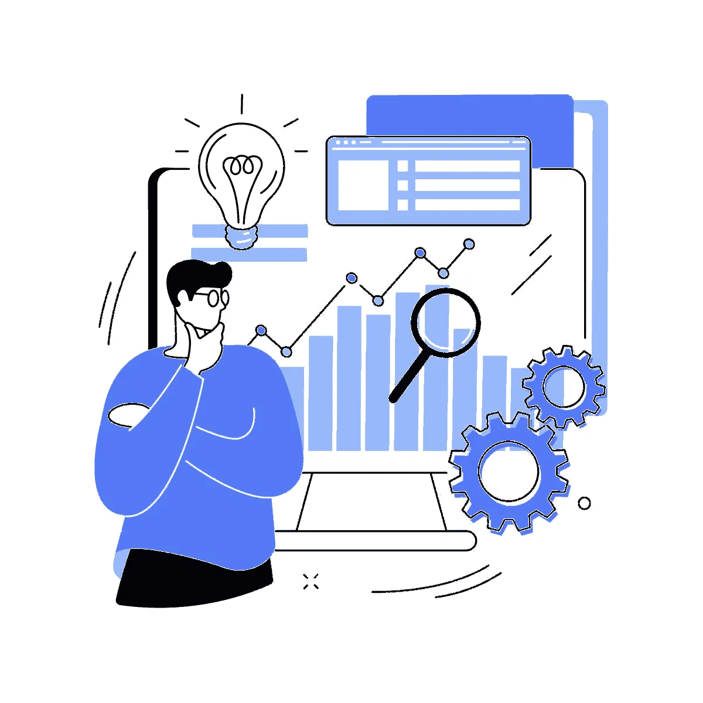

01
Estrategia de producto
Defino problemas, oportunidades y prioridades conectando research, comportamiento, negocio y KPIs.
- Research
- Oportunidades
- Prioridades
- KPIs

UX IA Claude Design E-commerce ResearchProduct Design Senior. Diseño y dirijo experiencias de producto conectando research, estrategia y datos. Transformo necesidades de usuario y objetivos de negocio en decisiones, experiencias y métricas para construir y optimizar productos digitales.
Descargar CV → Empecemos a crearExperiencia construyendo y optimizando productos desde research y estrategia hasta diseño, validación y medición.
Entiendo el problema, el comportamiento del usuario y los objetivos de negocio para identificar oportunidades, priorizar decisiones y dirigir la experiencia del producto.
Conecto research, diseño, datos e IA para validar decisiones, iterar y medir su impacto.
Defino problemas, oportunidades y prioridades conectando research, comportamiento, negocio y KPIs.
Diseño y evoluciono journeys y experiencias mediante validación, iteración y medición continua.
Cuatro casos de extremo a extremo: del problema y el research a la solución y sus métricas.
Trayectoria dirigiendo y diseñando productos digitales junto a equipos de negocio, ingeniería y QA.